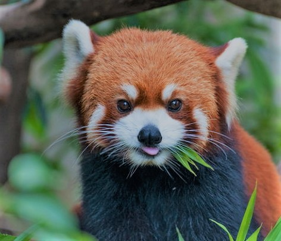
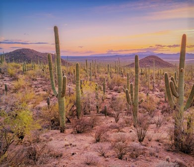
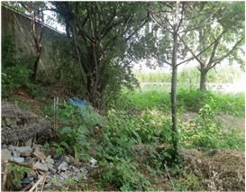
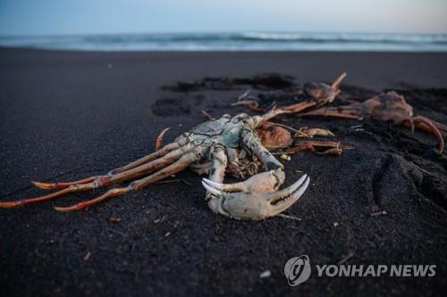
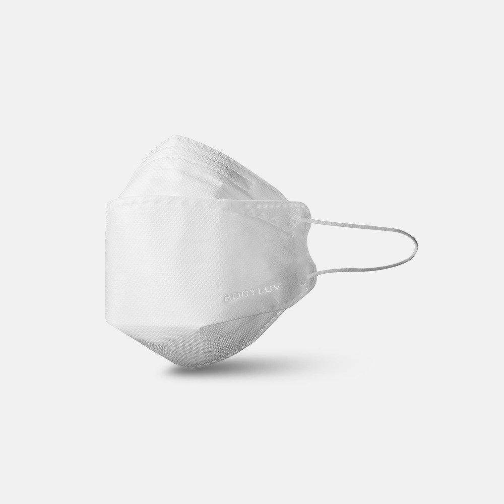

플라스틱
Article[인터뷰]
첫 사체부터 블라스틱 나와
EBS <다큐프라임 -인류세> 연출 맡은 최평순 PD님
멸종위기

1970년 이후 척추동물 2/3 사라졌다
반기성 / 케이웨더 예보센터장님
사막

독도 바다의 사막화를 막아라
윤희일 선임기자님
대지오염

평택 미군기지 주변 토양 오염 여전히 심각
경향 신문 <다큐프라임 -인류세> 최인진 기자님
해양오염

러시아 극동 캄차카 대규모 수질 오염
연합 뉴스 - 김형우 기자님
마스크

video[영상]
버려진 마스크만 최소 8억개
YTN ,사이언스 투데이